Blog
Le blog Chest0
Bien-être, alimentation, sport, sommeil et relations : 73 articles pour prendre soin de toi au quotidien.
Guides pratiques
Comment dire non sans culpabiliser : la méthode en 3 temps
Une méthode simple en 3 temps pour dire non sans se justifier ni agresser, avec 10 phrases prêtes à l'emploi pour le travail, la famille et les amis.
Lire l’article →Organisation · 7 minCharge mentale : comment la répartir vraiment, en 4 étapes
Rendre visible la charge mentale puis la partager pour de bon : inventaire des tâches, mots pour en parler, répartition de A à Z et réunion de 15 minutes.
Lire l’article →Sommeil · 6 minMieux dormir : 12 habitudes simples à installer
12 habitudes simples tirées des recommandations d'hygiène du sommeil : heure de lever, lumière, caféine, chambre, écrans, routine du soir et règle des 20 minutes.
Lire l’article →Organisation · 6 minOrganiser son année 2027 sans s'épuiser : la règle des 3
Une méthode simple pour organiser 2027 : roue de l'équilibre, 3 intentions, 3 objectifs par mois, 3 priorités par semaine et 10 minutes le dimanche.
Lire l’article →Esprit & relations
On vous coupe la parole en réunion : 5 façons de reprendre la main sans conflit
Vous préparez votre intervention, vous commencez à parler… et un collègue enchaîne sur son propre sujet. Être coupé une…
Esprit & relations · 4 minComment avoir de la répartie : 4 situations, 4 réponses justes (et la méthode PAUSE)
La bonne phrase arrive souvent dans l'escalier, bien après la conversation. Sur le moment, vous avez souri sans savoir…
Sommeil & stress
 Sommeil & stress · 5 min
Sommeil & stress · 5 minDétox dopaminergique et fatigue mentale : le guide pour réinitialiser sa concentration et sa volonté
Combien de fois par jour déverrouillez-vous votre smartphone sans aucune raison précise ? Combien de fois…
Sommeil & stress · 5 minFatigue chronique et brouillard mental : le protocole méconnu pour réinitialiser son énergie en 7 jours
Vous réveillez-vous parfois avec la sensation d'être tout aussi fatigué que la veille au coucher ? Ressentez-vous ce «…
Sommeil & stress · 8 minJournal du sommeil : comment observer ses habitudes sur 7 jours
Une nuit agitée peut prendre beaucoup de place dans nos souvenirs. Mais à quelle heure se couche-t-on les autres soirs…
Sommeil & stress · 4 minAlimentation, activité physique, sédentarité, sommeil : 4 habitudes à observer au quotidien
Nos habitudes quotidiennes se construisent souvent sans que nous y prêtions vraiment attention. Ce que nous mangeons…
 Sommeil & stress · 6 min
Sommeil & stress · 6 minL’art de l'équilibre intérieur : comment harmoniser le corps, l'esprit et l'énergie vitale
Dans un monde où le rythme effréné impose une charge mentale permanente, beaucoup de personnes perçoivent leur santé…
Sommeil & stress · 10 minLe guide complet de la vitalité globale : optimiser son énergie, son métabolisme et son équilibre au quotidien
Dans notre rythme de vie moderne, la fatigue chronique, les baisses de concentration et le stress permanent sont…
Sommeil & stress · 7 minLe corps vieillit lorsqu’on cesse de l’utiliser 1 : 10 habitudes quotidiennes qui ralentissent le vieillissement
Le corps vieillit lorsqu’on cesse de l’utiliser : pourquoi de simples habitudes quotidiennes peuvent faire toute la…
Sommeil & stress · 7 minBains de pieds thérapeutiques : 9 recettes naturelles et leurs véritables bienfaits
Bains de pieds thérapeutiques : un rituel ancestral pour le bien-être du corps et de l’esprit Par Chest0 JM.S Prendre…
Sommeil & stress · 6 minMigraine : 5 routines bien-être naturelles pour mieux traverser les journées difficiles
Le rituel naturel que beaucoup adoptent pour mieux traverser les journées difficiles Cet article est informatif et ne…
Élixirs naturels
 Élixirs naturels · 4 min
Élixirs naturels · 4 minL'art des élixirs naturels et des épices thérapeutiques : revitaliser son organisme au quotidien
Dans la quête d'une santé robuste et d'une vitalité durable, nous cherchons souvent des solutions complexes là où la…
Élixirs naturels · 6 minÉlixir Laurier et Cannelle : Le Secret Naturel Digestion & Vitalité
L'Élixir Laurier et Cannelle : Votre Nouveau Rituel Matinal pour Réveiller le Corps en Douceur Vous est-il déjà arrivé…
Élixirs naturels · 6 minLe Secret de l'Océan Calme : Votre Élixir Naturel Anti-Stress à Faire à la Maison
Avez-vous déjà eu cette sensation que votre cerveau ressemble à un onglet de navigateur qui ne répond plus, avec 40…
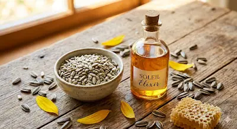
Élixirs naturels · 10 minL'Élixir aux Graines de Tournesol : L'Alchimie Solaire pour Illuminer votre Cœur et Apaiser votre Esprit
Introduction Imaginez une plante si puissante qu'elle suit la course du soleil tout au long de la journée, capturant…
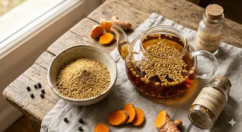
Élixirs naturels · 10 minL'Élixir au Fenugrec : L'Alchimie Dorée pour Dompter votre Métabolisme et Reconstruire votre Force
Introduction Imaginez une graine si ancienne qu'elle était déjà utilisée dans l'Égypte antique pour embaumer les…
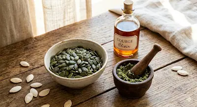
Élixirs naturels · 7 minL'Élixir aux Graines de Courge : L'Alchimie de la Force et de l'Équilibre Retrouvé
Introduction Imaginez un trésor vert émeraude, caché au cœur des cucurbitacées, si riche en énergie vitale qu'il était…
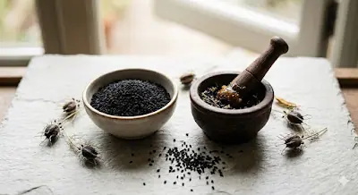
Élixirs naturels · 11 minL'Élixir à la Nigelle : Le Secret Ancestral pour une Immunité d'Acier et une Santé Totale
Introduction Imaginez un remède naturel si puissant qu'on lui attribue dans les textes anciens le pouvoir de "guérir…
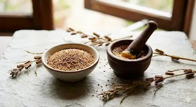
Élixirs naturels · 11 minL'Élixir aux Graines de Sésame : L'Or Blanc pour une Santé de Fer
Introduction Imaginez une petite graine, si discrète qu'on la remarque à peine, mais qui renferme en son cœur une…
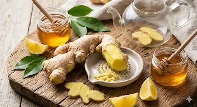
Élixirs naturels · 10 minL'Élixir au Gingembre : L'Alchimie du Feu pour une Santé Radieuse
Introduction Imaginez un remède naturel si puissant qu'il peut à la fois apaiser un estomac noué, réchauffer un corps…
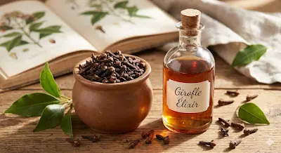
Élixirs naturels · 11 minL'Élixir aux Clous de Girofle : Un Concentré d'Alchimie Naturelle pour votre Santé
Introduction Imaginez une petite épice, modeste d'apparence, mais qui renferme en son cœur une puissance millénaire. Le…
Élixirs naturels · 5 minL’Élixir de Sérénité : Transmuter le Stress en Énergie de Vie
Introduction Le stress est souvent décrit comme le mal du siècle. Pourtant, à l’origine, il est une réponse biologique…
Élixirs naturels · 5 minL’Élixir de Prana : Le Secret du Souffle pour Maîtriser sa Biologie
Introduction Nous respirons environ 23 000 fois par jour. Pourtant, la majorité d'entre nous est en état de " famine…
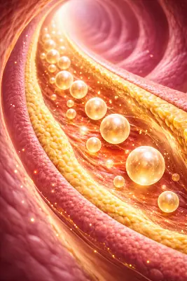
Élixirs naturels · 5 minL’Élixir du Réparateur : Comprendre et Harmoniser son Cholestérol
Introduction Le cholestérol est sans doute la molécule la plus mal comprise et la plus injustement diabolisée de la…
Élixirs naturels · 5 minL’Élixir de Source : L’Art d’Hydrater ses Cellules plutôt que de se Noyer
Introduction Nous sommes des êtres liquides. Notre corps est composé à 70 % d’eau, et au niveau moléculaire, nous…
Élixirs naturels · 5 minL’Élixir d’Éther : Quand le Manque de Sommeil Éteint ton Alchimie Intérieure
Introduction Nous vivons dans une société qui glorifie la veille permanente et considère le sommeil comme une perte de…
Élixirs naturels · 5 minL’Élixir de Sang Vert : L'Alchimie de la Terre dans ton Assiette
Introduction Nous avons tendance à considérer les légumes comme une simple catégorie de la pyramide alimentaire, une…
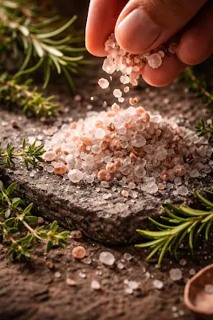
Élixirs naturels · 5 minL’Élixir de Vie Cristalline : Redécouvrir la Puissance du Sel Véritable
Introduction Depuis la nuit des temps, le sel est le symbole de la conservation, de la pureté et de la sagesse. Nous…
Élixirs naturels · 5 minL’Élixir de Photons : Ton Rituel de Lumière Naturelle
Introduction Nous passons aujourd'hui près de 90% de notre temps en intérieur , sous des lumières artificielles…
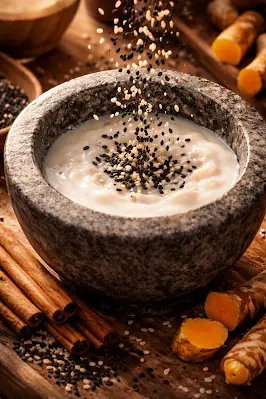
Élixirs naturels · 6 minL’Élixir de Lait d'Or Noir : Le Secret de Minéralisation au Sésame
Introduction Dans le tumulte de nos vies modernes, nous cherchons souvent la force dans des stimulants artificiels ou…
Élixirs naturels · 4 minÉlixir d’oignon revitalisant : Élixir naturel pour renforcer l’immunité, purifier l’organisme et soutenir les voies respiratoires
Introduction L’oignon est l’un des remèdes les plus anciens de la médecine populaire. Présent dans presque toutes les…
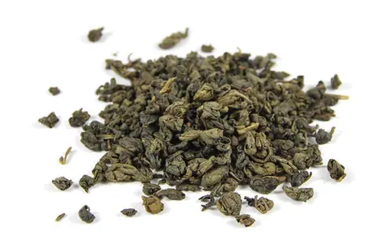
Élixirs naturels · 4 minÉlixir Vitalité & Clarté Mentale au Thé Vert :Élixir naturel pour l’énergie douce, la concentration et l’équilibre intérieur
Introduction Dans un quotidien rythmé par le stress, les sollicitations constantes et la fatigue mentale, notre…
Élixirs naturels · 4 minÉlixir aux Protéines Naturelles : le rituel fondamental pour nourrir les muscles, l’énergie et la vitalité globale
Introduction Les protéines sont souvent associées au sport, à la performance ou à la musculation. Pourtant, leur rôle…
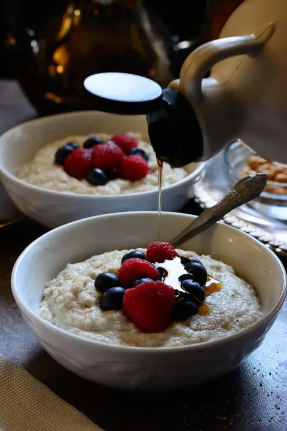
Élixirs naturels · 5 minÉlixir au Fonio : le rituel ancestral sans gluten pour nourrir l’énergie, la digestion et l’équilibre métabolique
Introduction Parmi les céréales les plus anciennes au monde, le fonio occupe une place unique. Cultivé depuis plus de 5…
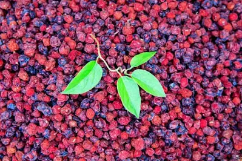
Élixirs naturels · 5 minÉlixir aux Baies de Schisandra : le rituel adaptogène complet pour l’énergie, le foie et la clarté mentale
Introduction Peu de plantes peuvent se vanter d’agir sur autant de plans à la fois . Les baies de schisandra , joyau de…
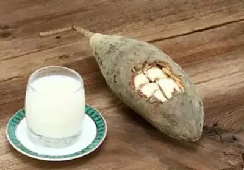
Élixirs naturels · 5 minÉlixir au Baobab : le rituel ancestral pour reminéraliser le corps, soutenir l’immunité et revitaliser l’énergie naturelle
Introduction Surnommé l’arbre de vie , le baobab nourrit les peuples africains depuis des siècles. Son fruit…
Élixirs naturels · 5 minÉlixir à la Suma : le rituel adaptogène profond pour renforcer l’énergie vitale, l’équilibre hormonal et la résilience globale
Introduction Parmi les plantes adaptogènes les plus puissantes et pourtant les moins connues, la suma occupe une place…
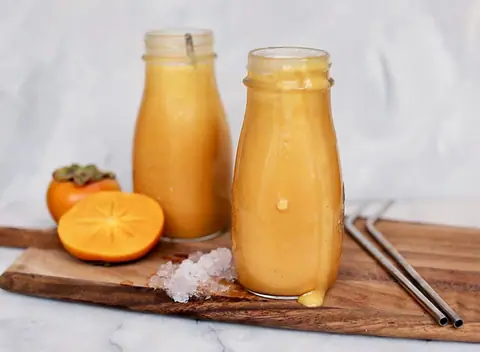
Élixirs naturels · 4 minÉlixir à la Lucuma : le rituel nutritionnel doux pour l’énergie durable, l’équilibre glycémique et la vitalité cellulaire
Introduction Il existe des aliments capables de nourrir profondément le corps sans jamais le brusquer . La lucuma …
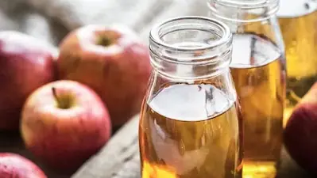
Élixirs naturels · 5 minÉlixir au Vinaigre de Cidre Non Pasteurisé : le rituel ancestral pour rééquilibrer la digestion, l’énergie et le métabolisme
Introduction Parmi les remèdes naturels les plus anciens et les plus sous-estimés, le vinaigre de cidre non pasteurisé…
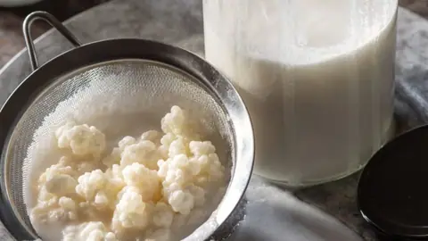
Élixirs naturels · 4 minÉlixir au Kéfir : le rituel fermenté vivant pour régénérer l’intestin, renforcer l’immunité et revitaliser le corps
Introduction La santé commence dans l’intestin. Ce n’est pas une tendance, c’est une réalité biologique. Depuis des…
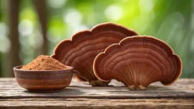
Élixirs naturels · 4 minÉlixir au Reishi : le rituel adaptogène sacré pour renforcer l’immunité, apaiser le mental et soutenir la longévité
Introduction Surnommé depuis des siècles le champignon de l’immortalité , le reishi occupe une place à part dans les…
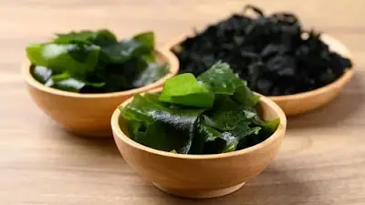
Élixirs naturels · 4 minÉlixir aux Algues Marines (Nori, Wakame, Kombu) : le rituel minéral profond pour revitaliser le corps et reminéraliser l’organisme
Introduction La terre nourrit… mais la mer recharge . Depuis des siècles, les peuples côtiers consomment les algues…
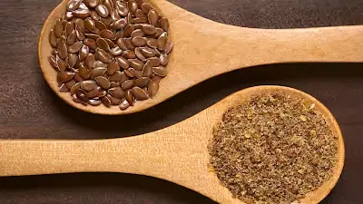
Élixirs naturels · 4 minÉlixir aux Graines de Lin Moulues : le rituel naturel pour la digestion, l’équilibre hormonal et la protection cellulaire
Introduction Parfois, les remèdes les plus puissants sont aussi les plus simples. Les graines de lin , utilisées depuis…
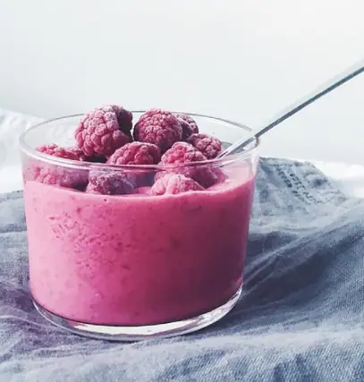
Élixirs naturels · 4 minÉlixir aux Baies d’Açaï : le rituel antioxydant ultime pour la vitalité, la protection cellulaire et l’éclat global
Introduction Au cœur de l’Amazonie, certaines populations consomment quotidiennement une baie considérée comme un…
Élixirs naturels · 5 minÉlixir à la Maca du Pérou : le rituel ancestral pour booster l’énergie, l’équilibre hormonal et la vitalité globale
Introduction Dans certaines régions du monde, l’énergie n’est pas artificielle, elle est cultivée . Sur les hauts…
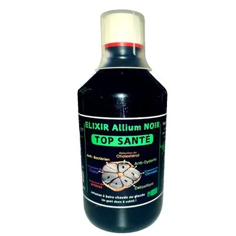
Élixirs naturels · 4 minÉlixir à l’Ail Noir : le rituel fermenté pour renforcer l’immunité, le cœur et la vitalité profonde
Introduction L’ail est connu depuis des millénaires comme un remède naturel puissant . Mais lorsqu’il est transformé…
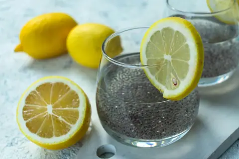
Élixirs naturels · 4 minÉlixir aux Graines de Chia : le rituel naturel pour nourrir le corps, soutenir l’énergie et hydrater en profondeur
Introduction Dans un monde où l’on mange vite, où l’on s’hydrate mal et où le corps est souvent sollicité sans être…
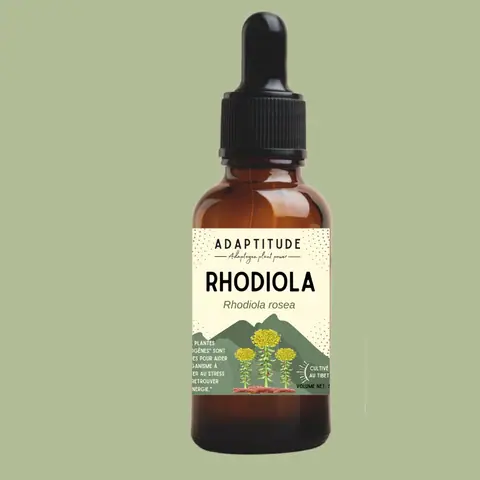
Élixirs naturels · 5 minÉlixir au Rhodiola Rosea : le rituel adaptogène pour renforcer l’énergie mentale, la résistance au stress et la performance naturelle
Introduction Dans un quotidien rythmé par les exigences professionnelles, les responsabilités personnelles et la…
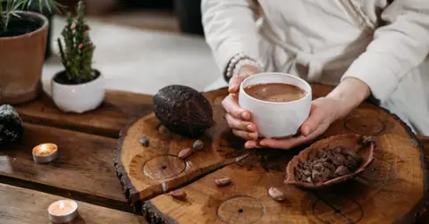
Élixirs naturels · 5 minÉlixir au Cacao Cru : le rituel ancestral pour nourrir le cœur, l’esprit et l’énergie vitale
Introduction Bien avant de devenir un simple produit sucré industriel, le cacao était considéré comme une plante sacrée…
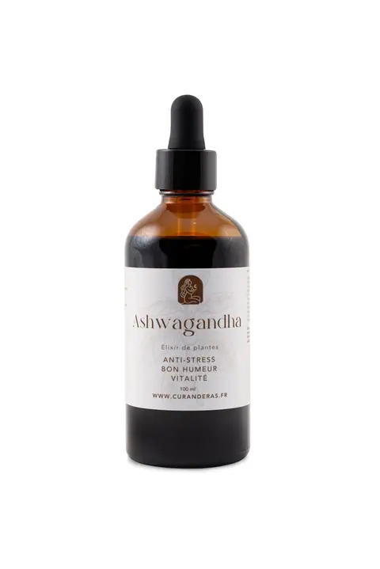
Élixirs naturels · 5 minÉlixir à l’Ashwagandha : le rituel naturel pour apaiser le mental, renforcer le corps et retrouver l’équilibre
Introduction Nous vivons dans une époque où le stress est devenu quasi permanent. Pression mentale, fatigue nerveuse…
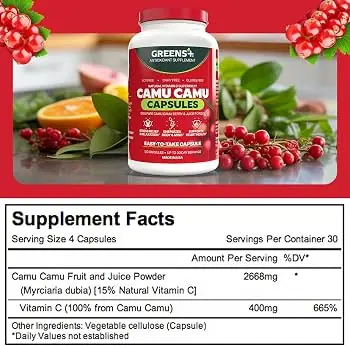
Élixirs naturels · 4 minÉlixir au Camu-Camu : le rituel naturel ultime pour renforcer l’immunité et revitaliser l’organisme
Introduction Dans un monde où la fatigue, le stress et les carences nutritionnelles sont devenus monnaie courante…
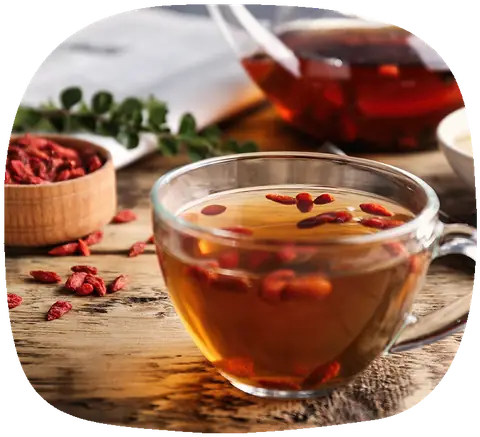
Élixirs naturels · 3 minÉlixir aux Baies de Goji : un puissant soutien naturel pour l’énergie, l’immunité et la longévité
Utilisées depuis des millénaires dans la médecine traditionnelle asiatique, les baies de goji sont reconnues comme un…
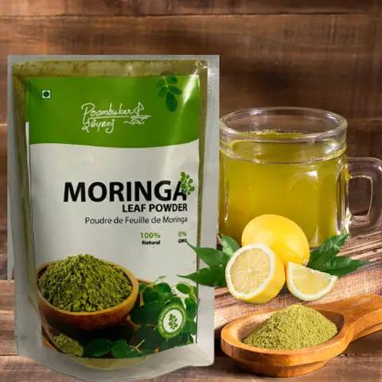
Élixirs naturels · 3 minÉlixir au Moringa : un concentré naturel pour nourrir le corps et renforcer la vitalité
Dans un monde où tout va vite et où l’alimentation est de plus en plus transformée, revenir à l’essentiel est une…
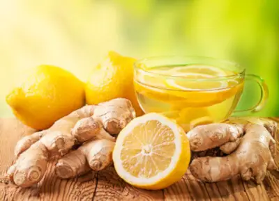
Élixirs naturels · 3 minÉlixir Anti-Rhume : un soutien naturel pour booster l’immunité et apaiser les premiers
symptômes Lorsque les températures baissent ou que les saisons changent, notre organisme est souvent mis à rude…
Alimentation & nutrition
Travail assis : comment organiser des pauses actives dans sa journée
Une matinée de dossiers, un déjeuner, puis des réunions en visioconférence : on peut arriver au soir sans avoir pensé à…
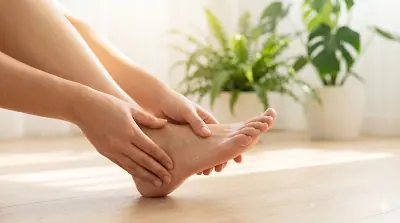
Alimentation & nutrition · 8 min8 symptômes des pieds qui peuvent révéler un problème de santé
Vos Pieds Vous Parlent : 8 Signaux d'Alerte Invisibles à Ne Jamais Ignorer Regardez-les un instant. Cachés la majeure…
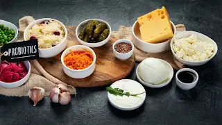
Alimentation & nutrition · 3 minLes Probiotiques Naturels en Compléments Alimentaires : Une Clé pour la Santé
Les probiotiques sont des micro-organismes vivants, principalement des bactéries et des levures, qui, lorsqu'ils sont…
Sport & mouvement
 Sport & mouvement · 4 min
Sport & mouvement · 4 minL’art du mouvement conscient : bâtir un corps fort, souple et durable sans matériel
Dans notre quotidien moderne marqué par la sédentarité, le corps humain subit une immobilisation prolongée pour…
Sport & mouvement · 13 minLe corps vieillit quand on cesse de l'utiliser 2 : ce que la science révèle sur les vrais mécanismes de la longévité.
Par Chest0 JM.S Nous avons longtemps considéré le vieillissement comme une fatalité biologique linéaire, une simple…
Sport & mouvement · 4 minLes compléments alimentaires soutiennent le corps sans le remplacer : Compléments alimentaires - une aide naturelle, pas une béquille
Introduction Fatigue persistante, stress chronique, troubles digestifs, baisse d’immunité, difficultés de…
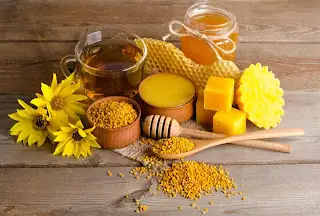
Sport & mouvement · 3 minLes produits de la ruche
Les produits de la ruche I. Introduction A. Définition des produits de la ruche - Substances naturelles…
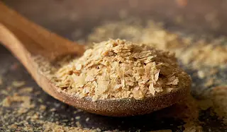
Sport & mouvement · 3 minLa levure de bière
La levure de bière comme complément alimentaire Lien vers Amazon I. Introduction A. Définition de la levure de…
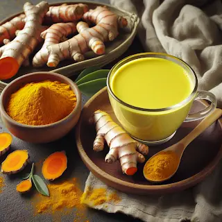
Sport & mouvement · 2 minLe curcuma cet aliment magique
Les Bienfaits du Curcuma : Composition et Utilisation Le curcuma, cette épice dorée originaire de l'Inde, est bien plus…
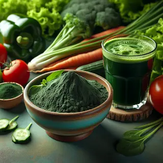
Sport & mouvement · 2 minSpiruline un super-aliment
Les Bienfaits de la Spiruline : Composition et Utilisation La spiruline, cette algue bleu-vert microscopique, est une…
Longévité & santé
Les 20 aliments que les centenaires consomment régulièrement pour vivre plus longtemps
Les secrets alimentaires des populations qui vivent le plus longtemps Chaque année, de nouvelles études viennent…
Longévité & santé · 13 minLe microbiote intestinal : cet organe invisible qui gouverne votre santé et votre vitalité.
Par Chest0 JM.S Nous abritons en nous un univers secret, une jungle microscopique dont nous commençons à peine à…
Longévité & santé · 18 minLes 10 habitudes des habitants des Zones Bleues qui expliquent leur exceptionnelle longévité
Pourquoi certaines populations vivent-elles aussi longtemps ? Pourquoi certaines personnes dépassent-elles…
Longévité & santé · 7 minCanicule : dangers, symptômes et conseils pour bien se protéger
Canicule : comprendre les risques, protéger son corps et adopter les bons réflexes Par Chest0 JM.S Chaque été, les…
Longévité & santé · 8 minLes 10 Hormones Principales du Corps : Guide Simple et Naturel
Les 10 Chefs d'Orchestre de Votre Corps : Comprendre Vos Hormones pour Reprendre le Contrôle Vous vous levez un matin…